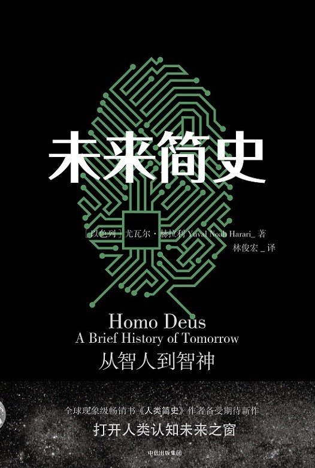

未来简史

第1章 人类的新议题
这正是历史知识的悖论。知识如果不能改变行为，就没有用处。但知识一旦改变了行为，本身就立刻失去意义。我们拥有越多数据，对历史了解越深入，历史的轨迹就改变得越快，我们的知识也过时得越快。
第7章 人文主义革命
他们认为战争是光荣的、开战的理由是正义的、领军的将军是个天才，但经过几个星期真正的战火洗礼，所有的泥泞、流血加上死亡的气味，让他们的幻想一一破灭。如果他们活了下来，这些原本天真的士兵离开战场后，就会成为更聪明的人，不再相信学校、电影和政客花言巧语中的陈词滥调与理想。
剑桥大学、索邦大学和伯克利大学（当时还有“伯克利人民共和国”的戏称）的学生，除了会翻阅毛主席的“红宝书”，也会把切·格瓦拉的英雄肖像挂在床头。
虽然西方学者和运动人士最爱挑自由主义一揽子方案的毛病，但至今仍未能提出更佳的选项。
没有信仰，火车就不能决定要开往哪个方向。
塑造历史的，往往是一小群向前看的创新者，而不是向后看的大众。
要达到马克思所称“各尽所能、各取所需”的理想，社会就必须让距离遥远的各种产品都能够方便集中及分配，而且整个国家也要能够监控和协调国内所有的活动。
第8章 实验室里的定时炸弹
许多妇女分娩时都会经历难以忍受的痛苦，这会让人认为，只要生过一次，没有哪个心智正常的女性会愿意再生一次。但在分娩后的几天，内分泌系统会分泌皮质醇和β–内啡肽，舒缓疼痛，让人感到安慰，甚至是欢快，再加上对小婴儿的爱与日俱增，又得到来自亲友、宗教和民族主义宣传的多方赞誉，从而合力把分娩从创伤转为正面记忆。
叙事自我有一把锋利的剪刀、一支黑色的粗马克笔，一一审查着我们的体验。至少有某些令人恐惧不悦的时刻就这样被删减或抹去，最后整理出一个有欢乐结尾的故事，归档备存。
我们的叙事自我宁可在未来继续痛苦，也不想承认过去的痛苦完全没有意义。
人类十分擅长应付认知上的矛盾，能允许自己在实验室里信一套，到了法庭或议会又信完全不同的另一套。
第9章 大分离
- 生物是算法。每种动物（包括智人）都是各种有机算法的集合，是数百万年进化自然选择的结果。
- 算法的运作不受组成物质的影响。算盘的算珠无论是木质、铁质还是塑料质，两个珠子加上两个珠子还是等于四个珠子。
- 因此，没有理由相信非有机算法永远无法复制或超越有机算法能做的事。只要运算结果有效，算法是以碳为载体还是以硅为载体又有何差别？
人工智能目前绝无法做到与人类匹敌。但对大多数的现代工作来说，99%的人类特性及能力都是多余的。人工智能要把人类挤出就业市场，只要在特定行业需要的特定能力上超越人类，就已足够。
想要不被淘汰只有一条路：一辈子不断学习，不断打造全新的自己。只不过，许多人，甚至是大多数人，大概都做不到这一点。
美国生物科技公司越来越担心，由于美国严格管控个人隐私，导致未来可能将整个基因市场拱手让给中国。
正如卡尼曼的冷水实验，叙事自我到了政治领域，一样会遵循“峰终定律”，忘了绝大多数的事情，只记得几件极端的事件，并对最近的事件赋予完全不成比例的高权重。
在欧洲帝国主义的全盛时期，殖民者和商人用彩色的珠子，就从当地人那里换来了整座岛屿、整个国家。而在21世纪，个人数据可能是大多数人能够提供的最宝贵资源，但我们正亲手把这些数据交给各大科技企业，好换来免费的电子邮箱或是有趣的小猫视频。
自由主义面对社会不平等的解药，不是让每个人都有同样的体验，而是对于不同的人类体验赋予同等的价值。
第10章 意识的海洋
新宗教浮现的地点，不太可能是阿富汗的洞穴或是中东的宗教学校，反而会是研究实验室。就像社会主义承诺以蒸汽和电力为世界提供救赎，在接下来的几十年间，新的科技宗教也可能承诺以算法和基因为世界提供救赎，进而征服世界。
智人之所以统治世界，并不是因为智人的情感更深刻或音乐体验更复杂。至少在某些体验领域里，智人确实可能不如鲸鱼、蝙蝠、老虎或鹈鹕。
现代人类已经患上“错过恐惧症”（Fear Of Missing Out，FOMO），总在担心自己错过了什么；虽然手中的选择比以往任何时候都多，但选了之后又很难全心全意对待。
数百万年来，人类曾经是升级版的黑猩猩。而到了未来，人类则可能变成放大版的蚂蚁。
人的意志是宇宙中最重要的东西，同时人类在开发能够控制、重新设计意志的科技。毕竟，能够控制全世界最重要的东西，岂不是太棒了？然而一旦这样的控制成真，过去神圣的人类就会成为另外一种设计品，反而让科技人文主义不知该何去何从。只要我们仍然相信人类的意志和经验是权威和意义的本源，就永远无法处理和这些科技的关系。
第11章 数据主义
这种所有数据都由单处理器来处理并决定的极端情况，就是苏联式共产主义。在苏联经济里，号称要让人人“各尽所能、各取所需”。换句话说，政府会把你的利润全部取走，再判断你有什么需求，并提供给你。
资本主义能够赢得“冷战”，是因为至少在这个科技加速改变的时期，分散式数据处理的效果就是比集中式数据处理更好。
政府确保教师每月拿到薪水、下水道不会堵塞，却不知道20年后国家该走向何方。
整部历史的进程就要通过4种方式，提高系统效率：
- 增加处理器数量。拥有10万人口的城市，运算能力会高于拥有1000人口的村庄。
- 增加处理器种类。处理器不同，运算和分析数据的方式就不同。因此，如果单一系统拥有不同种类的处理器，就能增加其动力与创意。农民、祭司和医生对话中所产生的想法，可能是狩猎采集者之间怎么谈都不会谈到的。
- 增加处理器之间的连接。如果只是增加处理器数量和种类，但彼此之间无法连接，仍然没有意义。10个有贸易网络连接的城市，产出的经济、科技与社会创新通常会高于10个孤立的城市。
- 增加现有连接的流通自由度。如果数据无法自由流通，仅仅连接处理器也不会有什么用处。这就像是在10个城市之间修建了道路，但路上满是劫匪，商人或旅行者难以通行，这条路的作用也就会大打折扣。
我们常常想象，民主和自由市场之所以获胜，是因为它们比较“好”。但事实上，它们之所以胜出，是因为改善了全球数据处理系统。
但数据主义指出，民众真正想要的并不是车辆本身，而是移动的便利，只要有优秀的数据处理系统，就能简单又有效地提供这种移动的便利。
没有人能真正理解全球经济如何运作，也没有人知道全球政治将走向何方。但也没有人真的需要理解这一切。你该做的，就只是回信回得更快（而且允许系统存取这些内容）。
现代的新座右铭是：“如果你体验到了什么，就记录下来。如果你记录下了什么，就上传。如果你上传了什么，就分享。”
汽车取代马车，我们并不是让马升级，而是直接让马退休。或许，智人也到了该退休的时候。
我们自己设定的标准，会让我们也走上猛玛象和白鳍豚的灭绝之路。到时回首过去，人类也只会成为宇宙数据流里的一片小小涟漪。
- 科学正逐渐聚合于一个无所不包的教条，也就是认为所有生物都是算法，而生命则是进行数据处理。
- 智能正与意识脱钩。
- 无意识但具备高度智能的算法，可能很快就会比我们更了解我们自己。 这三项发展提出了三个关键问题，希望读者在读完本书之后，仍能常挂于心：
- 生物真的只是算法，而生命也真的只是数据处理吗？
- 智能和意识，究竟哪一个才更有价值？
- 等到无意识但具备高度智能的算法比我们更了解我们自己时，社会、政治和日常生活将会有什么变化？